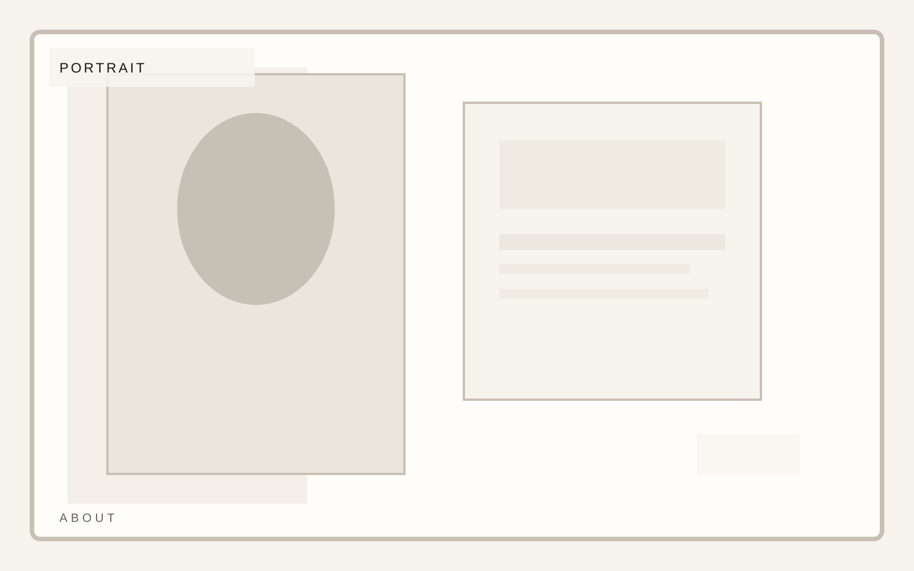
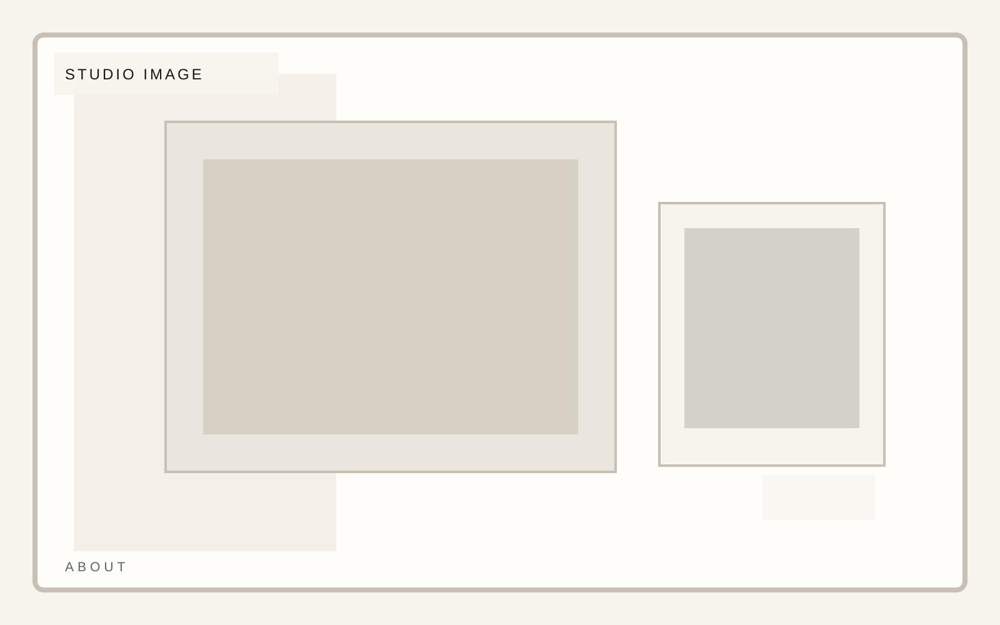

Practice
Editorial and portraiture
Photography portfolio
A portfolio template for photographers and image-makers who need rigorous composition, project rhythm, and clean editorial restraint. The biography should support the work and then step back.
Photography portfolio
The bio should be human and precise. Keep the visual weight on the work, with the biography acting as context rather than centerpiece.


Photography portfolio
Press or recognition should be handled with enough restraint that it adds authority without becoming its own performance.